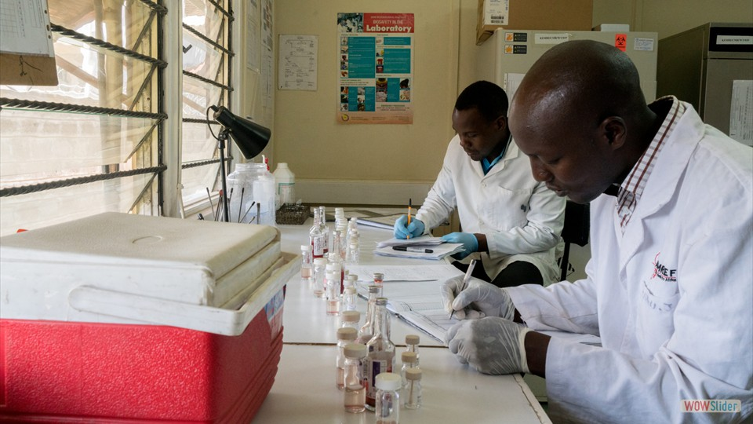

- 


 1
1 2
2 4
4 5
5 6
6html slideshow by WOWSlider.com v9.0
The Kenya Medical Research Institute (KEMRI) is a state corporation established through the Science and Technology (Amendment) Act of 1997. This has since been amended to Science, Technology and Innovation Act 2013 as the national body responsible for carryingout health research in Kenya.
KEMRI has grown from its humble beginning over 40 years ago to become a regional leader in human health research. The institute currently ranks as one of the leading centers of excellence in health research both in Africa as well as globally.
KEMRI's mission is to improvehuman health and quality of life through research,capacity building and innovation and service delivery with the following:
1. To carry out research in human health
2. To cooperate with other research organizations and institutions of higher learning on matters of relevant research and training.
3. To liaise with other relevant bodeis within and outside Kenya carrying out research and related activities.
4. To disseminate and translate research findings for evidence based policy formulation and implementation.
5. To cooperate with the Ministry of Health, the National Commission for Science, Technology and Innovation (NACOSTI) and Medical Sciences Advisory Research Committee on matters pertraining the research policies and priorities.
KEMRI is the Medical Reaserch arm of The Government and provides advice to the Ministry on various aspects of healthcare and delivery. national diseases surveillance and rapid repsonse capacity for major diseases outbreaks (Cholera, Chikungunya Virus, HINI flu, Yellow Fever, Rift Valley Fever, Ebola, Aflatoxicosis etc.)
KEMRI provides Technical facilitation on development of National Guidelines for Prevention of various diseases, developed a curriculum and guidelines on biosafety and biosecurity for Health Care Workers In collaboration with MOH and rationalization and regualtion of traditional medicine.